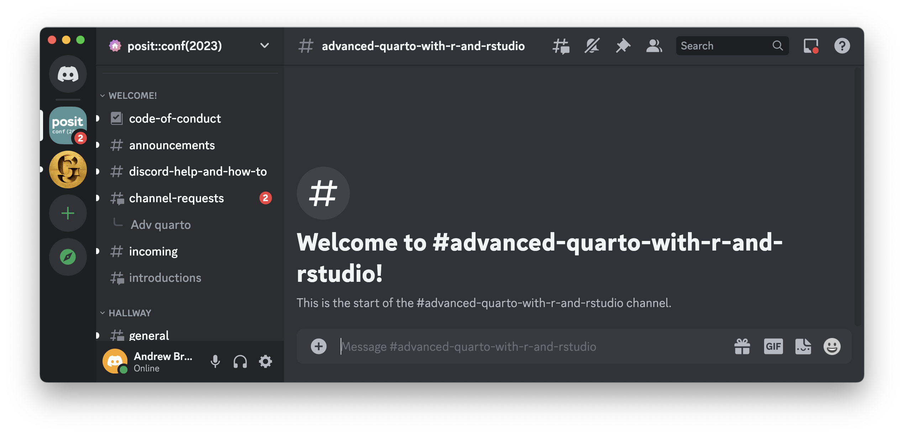
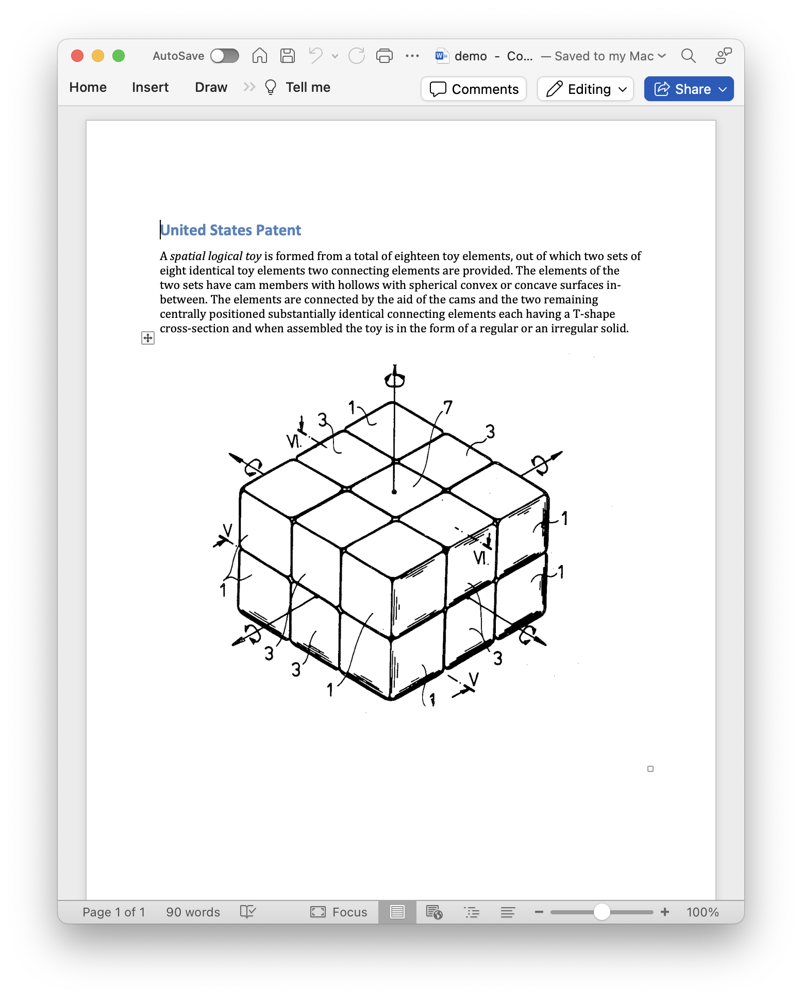
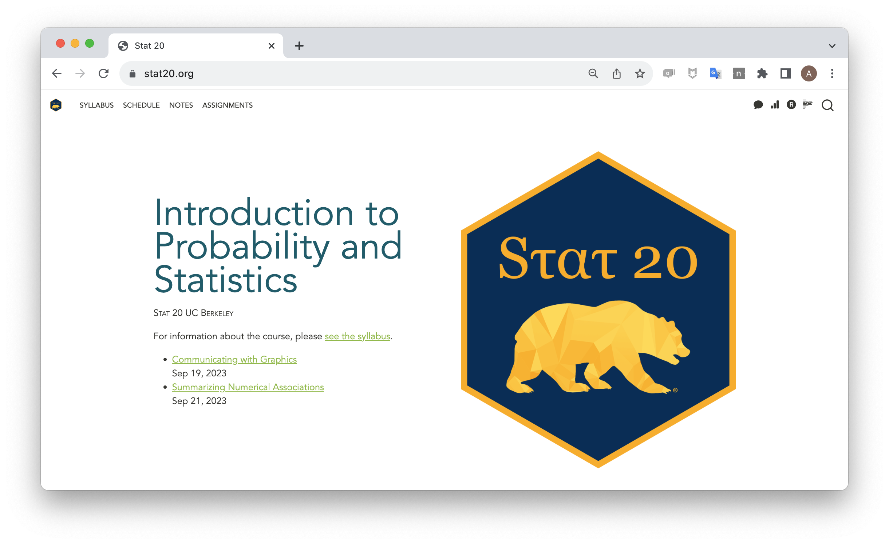

02:00
From Documents to Projects
Workshop: Quarto for R & RStudio
posit::conf 2023
Introductions
Take ~2 minutes to introduce yourself to your neighbors.
Please share …
- Your name
- Where you’re from
- What you work on in 3 words or fewer
- Name one thing you’ve made that you’re proud of
About the Workshop
Workshop materials are at:
Goals for the Workshop
Everyone leaves with a website and a book.
Learn from one another.
Build an understanding of the big picture.
From Magic to Magical Machines
![Two fuzzy round monsters dressed as wizards, working together to brew different things together from a pantry (code, text, figures, etc.) in a cauldron labeled “R Markdown”. The monster wizard at the cauldron is reading a recipe that includes steps “1. Add text. 2. Add code. 3. Knit. 4. (magic) 5. Celebrate perceived wizardry.” The R Markdown potion then travels through a tube, and is converted to markdown by a monster on a broom with a magic wand, and eventually converted to an output by pandoc. Stylized text (in a font similar to Harry Potter) reads “R Markdown. Text. Code. Output. Get it together, people.”](images/rmarkdown_wizards.png)

Quartoing as Coding
DRY out your document (Don’t Repeat Yourself)
Use control flow (if/then)
Think about data structures

Workshop Schedule
- 9-10:30 am From Docs to Projects
- 10:30-11 am Coffee Break
- 11-12:30 pm Websites
- 12:30-1:30 pm Lunch
- 1:30-2 pm Advanced Slidecraft
- 2-3 pm Books
- 3-3:30 pm Coffee Break
- 3:30-4:30 Extensions
- 4:30-5 pm Quarto Dev Q&A
Discussions: Discord
Ask questions at #advanced-quarto-with-r-and-rstudio.
Flow of the Workshop


Stickies

During an activity, place a blue sticky on your laptop if you’re good to go and a red sticky if you want help.
Image by Megan Duffy
Practicalities
- WiFi:
- Network: Posit Conf 2023
- Password: conf2023
- There are gender-neutral bathrooms located are among the Grand Suite Bathrooms.
- There are two meditation/prayer rooms: Grand Suite 2A and Grand Suite 2B. Open Sunday - Tuesday 7:30 a.m. - 7:00 p.m., Wednesday 8:00 a.m. - 6:00 p.m.
- The lactation room is located in Grand Suite 1. Open Sunday - Tuesday 7:30 a.m. - 7:00 p.m., Wednesday 8:00 a.m. - 6:00 p.m.
- Participants who do not wish to be photographed have red lanyards; please note everyone’s lanyard colors before taking a photo and respect their choices.
- The Code of Conduct and COVID policies can be found at https://posit.co/code-of-conduct/. Please review them carefully. You can report Code of Conduct violations in person, by email, or by phone. Please see the policy linked above for contact information.
A Challenge
Join me in Posit Cloud!
If having not yet accepted an invite:
If you have:
Paired programming

Talk through your code.
Two people. One laptop.
Your Turn
Click in the quarto-puzzle project, open quarto-puzzle.qmd and render it. Then modify the document to add five features:
- Add an author to the yaml.
- Convert “Advanced Quarto” to be a level two header.
- Add a link to the Quarto website (https://quarto.org/) on the word “Quarto” that appears before the comma in the first sentence.
- Turn the schedule into a bulleted list with 8 items.
- At the end of the document, insert the image
quarto-logo.pngfound in the same directory and make it 150 pixels wide.
Render after each change to your document to check your progress!
10:00
Pandoc’s Document Model
What Defines a Document?
A document consists of content, format, appearance, structure.

- Content: text, code, graphics
- Format: functionality, technology
- Appearance: fonts, colors, layout
- Structure: paragraphs, lists, emphasis, etc.
What defines the structure of a document?
A document is a list of block elements that may contain inline elements or other blocks, along with associated metadata.
A document is a list of block elements that may contain inline elements or other blocks, along with associated metadata.
- Block Element
-
Starts on a new line and followed by an empty line. Forms a visible block.
Block 1
Block 2
Block 3
Examples:
- Paragraph
- Heading
- Image
- List
A document is a list of block elements that may contain inline elements or other blocks, along with associated metadata.
- Inline Element
-
Modifies content inline and is not followed by a new line.
Block 1
Inline 1
Inline 2
Block 3
Examples:
- Emphasis
- Link
- Footnote
- Citation
A document is a list of block elements that may contain inline elements or other blocks, along with associated metadata.
- Metadata
-
Ancillary info about the document’s origin, format, look, etc.
Metadata
Block 1
Inline 1
Inline 2
Block 3
Examples:
- Author
- Keywords
- Character set
- Appearance/style
A document is a list of block elements that may contain inline elements or other blocks, along with associated metadata.
Header
Paragraph
Emphasis
Image



Review: YAML
Metadata: YAML
“Yet Another Markup Language” or “YAML Ain’t Markup Language” is used to provide document level metadata …
Which of the following are valid ways to include metadata?
Metadata: YAML Syntax Rules
Metadata: Fussing with YAML
Invalid
Quarto linting
Lint, or a linter, is a static code analysis tool used to flag programming errors, bugs, stylistic errors and suspicious constructs.

Quarto YAML Intelligence
RStudio + VSCode provide rich tab-completion - start a word and tab to complete, or Ctrl + space to see all available options.
Fundamentals of a Quarto Project
What defines a Quarto Project?
A Quarto Project is a directory that contains a file called
_quarto.yml.
This is a Quarto Project.

This is not.

_quarto.yml
A YAML file with particular keys and values that Quarto recognizes. Unrecognized keys are ignored.
_quarto.yml
A YAML file with particular keys and values that Quarto recognizes. Unrecognized keys are ignored.
_quarto.yml
project:
type: website
output-dir: _site
resources:
- "/docs/download/_download.json"
- "/docs/download/_prerelease.json"
- "/_redirects"
website:
title: "Quarto"
image: "quarto-dark-bg.jpeg"
favicon: "favicon.png"
google-analytics: "G-FV9Z7SDZ0M"
open-graph: true
twitter-card: true
site-url: https://quarto.org
repo-url: https://github.com/quarto-dev/quarto-web
issue-url: https://github.com/quarto-dev/quarto-cli/issues/new/choose
repo-actions: [edit, issue]
page-navigation: true
bread-crumbs: true
search:
show-item-context: true
type: overlay
algolia:
index-name: prod_QUARTO
application-id: ZPJB5I1QN7
search-only-api-key: 41be6c1e0a7fea4a51b107810facf577
analytics-events: true
show-logo: true
page-footer:
left: |
Proudly supported by
[{fig-alt="Posit" width=65px}](https://posit.co)
center:
- text: "About"
href: about.qmd
- text: "FAQ"
href: docs/faq/index.qmd
- text: "License"
href: license.qmd
- text: "Trademark"
href: trademark.qmd
right:
- icon: twitter
href: https://twitter.com/quarto_pub
aria-label: Quarto Twitter
- icon: github
href: https://github.com/quarto-dev/quarto-cli
aria-label: Quarto GitHub
- icon: rss
href: https://quarto.org/docs/blog/index.xml
aria-label: Quarto Blog RSS
navbar:
background: light
logo: quarto.png
logo-alt: "Quarto logo."
title: false
collapse-below: lg
left:
- text: "Overview"
href: index.qmd
- text: "Get Started"
href: docs/get-started/index.qmd
- text: "Guide"
href: docs/guide/index.qmd
- text: Extensions
href: docs/extensions/index.qmd
- text: "Reference"
href: docs/reference/index.qmd
- text: "Gallery"
href: docs/gallery/index.qmd
- text: "Blog"
href: docs/blog/index.qmd
- text: "Help"
menu:
- text: "Report a Bug"
icon: "bug"
href: "https://github.com/quarto-dev/quarto-cli/issues"
- text: "Ask a Question"
icon: "chat-right-text"
href: "https://github.com/quarto-dev/quarto-cli/discussions"
- text: "FAQ"
icon: "question-circle"
href: docs/faq/index.qmd
tools:
- icon: twitter
href: https://twitter.com/quarto_pub
text: Quarto Twitter
- icon: github
href: https://github.com/quarto-dev/quarto-cli
text: Quarto GitHub
- icon: rss
href: https://quarto.org/docs/blog/index.xml
text: Quarto Blog RSS
sidebar:
- id: get-started
title: "Get Started"
style: "floating"
collapse-level: 2
align: left
contents:
- docs/get-started/index.qmd
- text: "Tutorial: Hello, Quarto"
href: docs/get-started/hello/
- text: "Tutorial: Computations"
href: docs/get-started/computations/
- text: "Tutorial: Authoring"
href: docs/get-started/authoring/
- id: guide
collapse-level: 1
contents:
- section: "Guide"
href: docs/guide/index.qmd
contents:
- section: "Authoring"
contents:
- docs/authoring/markdown-basics.qmd
- docs/authoring/figures.qmd
- docs/authoring/tables.qmd
- docs/authoring/diagrams.qmd
- docs/authoring/videos.qmd
- text: "Jupyter Notebooks"
href: docs/authoring/notebook-embed.qmd
- docs/authoring/callouts.qmd
- docs/authoring/code-annotation.qmd
- docs/authoring/article-layout.qmd
- section: "Scholarly Writing"
contents:
- docs/authoring/front-matter.qmd
- docs/authoring/title-blocks.qmd
- docs/authoring/footnotes-and-citations.qmd
- docs/authoring/cross-references.qmd
- docs/authoring/create-citeable-articles.qmd
- docs/authoring/appendices.qmd
- section: "Computations"
contents:
- docs/computations/python.qmd
- docs/computations/r.qmd
- docs/computations/julia.qmd
- docs/computations/ojs.qmd
- docs/computations/execution-options.qmd
- docs/computations/parameters.qmd
- section: "Tools"
contents:
- section: "JupyterLab"
contents:
- text: "JupyterLab Basics"
href: docs/tools/jupyter-lab.qmd
- text: "JupyterLab Extension"
href: docs/tools/jupyter-lab-extension.qmd
- section: "RStudio IDE"
contents:
- text: "RStudio Basics"
href: docs/tools/rstudio.qmd
- section: "Visual Editor"
href: docs/visual-editor/index.qmd
contents:
- text: Editor Basics
href: docs/visual-editor/index.qmd
- docs/visual-editor/technical.qmd
- docs/visual-editor/content.qmd
- docs/visual-editor/options.qmd
- docs/visual-editor/markdown.qmd
- section: "VS Code"
href: docs/tools/vscode.qmd
contents:
- text: "VS Code Basics"
href: docs/tools/vscode.qmd
- text: "Visual Editor"
href: docs/visual-editor/vscode/index.qmd
- text: "Notebook Editor"
href: docs/tools/vscode-notebook.qmd
- docs/tools/neovim.qmd
- docs/tools/text-editors.qmd
- section: "Documents"
contents:
- section: "HTML"
contents:
- docs/output-formats/html-basics.qmd
- docs/output-formats/html-code.qmd
- docs/output-formats/html-themes.qmd
- docs/output-formats/html-multi-format.qmd
- docs/output-formats/html-publishing.qmd
- section: "PDF"
contents:
- docs/output-formats/pdf-basics.qmd
- docs/output-formats/pdf-engine.qmd
- section: "MS Word"
contents:
- docs/output-formats/ms-word.qmd
- docs/output-formats/ms-word-templates.qmd
- section: "Markdown"
contents:
- docs/output-formats/gfm.qmd
- docs/output-formats/hugo.qmd
- docs/output-formats/docusaurus.qmd
- docs/output-formats/all-formats.qmd
- section: "Presentations"
contents:
- text: "Overview"
href: docs/presentations/index.qmd
- section: docs/presentations/revealjs/index.qmd
contents:
- text: "Reveal Basics"
href: docs/presentations/revealjs/index.qmd
- docs/presentations/revealjs/presenting.qmd
- docs/presentations/revealjs/advanced.qmd
- docs/presentations/revealjs/themes.qmd
- docs/presentations/powerpoint.qmd
- docs/presentations/beamer.qmd
- section: "Websites"
href: docs/websites/website-basics.qmd
contents:
- docs/websites/website-basics.qmd
- docs/websites/website-navigation.qmd
- docs/websites/website-blog.qmd
- docs/websites/website-search.qmd
- docs/websites/website-tools.qmd
- docs/websites/website-about.qmd
- section: "Listing Pages"
href: docs/websites/website-listings.qmd
contents:
- docs/websites/website-listings.qmd
- docs/websites/website-listings-custom.qmd
- section: "Books"
href: docs/books/book-basics.qmd
contents:
- docs/books/book-basics.qmd
- docs/books/book-structure.qmd
- docs/books/book-crossrefs.qmd
- text: "Customizing Output"
href: docs/books/book-output.qmd
- section: "Interactivity"
contents:
- text: "Overview"
href: docs/interactive/index.qmd
- section: docs/interactive/ojs/index.qmd
contents:
- text: "Introduction"
href: docs/interactive/ojs/index.qmd
- docs/interactive/ojs/libraries.qmd
- docs/interactive/ojs/data-sources.qmd
- docs/interactive/ojs/ojs-cells.qmd
- docs/interactive/ojs/shiny.qmd
- docs/interactive/ojs/code-reuse.qmd
- section: "Examples"
contents:
- docs/interactive/ojs/examples/penguins.qmd
- docs/interactive/ojs/examples/sunburst.qmd
- docs/interactive/ojs/examples/arquero.qmd
- docs/interactive/ojs/examples/population.qmd
- docs/interactive/ojs/examples/noaa-co2.qmd
- docs/interactive/ojs/examples/github.qmd
- docs/interactive/ojs/examples/layout.qmd
- section: "Shiny"
contents:
- text: "K-Means"
href: https://jjallaire.shinyapps.io/kmeans-shiny-ojs/
- text: "Binning"
href: https://jjallaire.shinyapps.io/binning-shiny-ojs/
- text: "Data Binding"
href: https://jjallaire.shinyapps.io/data-shiny-ojs/
- text: "Covid Map"
href: https://jjallaire.shinyapps.io/covid19-bicartogram/
- section: docs/interactive/shiny/index.qmd
contents:
- text: "Introduction"
href: docs/interactive/shiny/index.qmd
- docs/interactive/shiny/running.qmd
- docs/interactive/shiny/execution.qmd
- docs/interactive/shiny/resources.qmd
- section: "Examples"
contents:
- text: "Old Faithful"
href: https://jjallaire.shinyapps.io/shiny-old-faithful/
- text: "K-Means"
href: https://jjallaire.shinyapps.io/shiny-k-means/
- text: "Diamonds"
href: https://jjallaire.shinyapps.io/shiny-diamonds/
- section: "Widgets"
contents:
- docs/interactive/widgets/jupyter.qmd
- docs/interactive/widgets/htmlwidgets.qmd
- docs/interactive/layout.qmd
- section: "Publishing"
contents:
- docs/publishing/index.qmd
- docs/publishing/quarto-pub.qmd
- docs/publishing/github-pages.qmd
- docs/publishing/rstudio-connect.qmd
- docs/publishing/netlify.qmd
- docs/publishing/confluence.qmd
- docs/publishing/other.qmd
- text: "Publishing with CI"
href: docs/publishing/ci.qmd
- section: "Projects"
contents:
- docs/projects/quarto-projects.qmd
- docs/projects/code-execution.qmd
- docs/projects/profiles.qmd
- docs/projects/environment.qmd
- docs/projects/scripts.qmd
- docs/projects/virtual-environments.qmd
- section: "Advanced"
contents:
- docs/authoring/includes.qmd
- docs/authoring/variables.qmd
- docs/output-formats/page-layout.qmd
- docs/authoring/language.qmd
- docs/authoring/conditional.qmd
- docs/extensions/nbfilter.qmd
- id: extensions
title: "Extensions"
contents:
- "---"
- section: docs/extensions/index.qmd
contents:
- text: "Shortcodes & Filters"
href: docs/extensions/listing-filters.qmd
- text: "Journal Articles"
href: docs/extensions/listing-journals.qmd
- text: "Custom Formats"
href: docs/extensions/listing-formats.qmd
- text: "Revealjs Extensions"
href: docs/extensions/listing-revealjs.qmd
- docs/extensions/managing.qmd
- "---"
- section: docs/extensions/creating.qmd
contents:
- text: "Overview"
href: docs/extensions/creating.qmd
- docs/extensions/lua.qmd
- docs/extensions/lua-api.qmd
- text: "Distribution"
href: docs/extensions/distributing.qmd
- "---"
- text: "Shortcodes"
href: docs/extensions/shortcodes.qmd
- text: "Filters"
href: docs/extensions/filters.qmd
- section: "Journal Articles"
href: docs/journals/formats.qmd
contents:
- docs/journals/formats.qmd
- docs/journals/templates.qmd
- docs/journals/authors.qmd
- docs/extensions/formats.qmd
- docs/extensions/revealjs.qmd
- docs/extensions/project-types.qmd
- docs/extensions/starter-templates.qmd
- id: manuscripts
title: "Manuscripts"
style: "floating"
collapse-level: 2
align: left
contents:
- text: Manuscripts Overview
href: docs/manuscripts/index.qmd
- text: "Authoring Manuscripts"
contents:
- text: Jupyter Lab
href: docs/manuscripts/authoring/jupyterlab.qmd
- text: VS Code
href: docs/manuscripts/authoring/vscode.qmd
- text: RStudio
href: docs/manuscripts/authoring/rstudio.qmd
- text: "Publishing Manuscripts"
href: docs/manuscripts/publishing.qmd
- text: "Next Steps"
href: docs/manuscripts/next-steps.qmd
- text: "---"
- text: "Manuscript Components"
href: docs/manuscripts/components.qmd
- id: reference
title: "Reference"
collapse-level: 3
contents:
- section: "Reference"
href: docs/reference/index.qmd
contents:
- section: "Formats"
contents:
- text: "HTML"
href: docs/reference/formats/html.qmd
- text: "PDF"
href: docs/reference/formats/pdf.qmd
- text: "MS Word"
href: docs/reference/formats/docx.qmd
- text: "OpenOffice"
href: docs/reference/formats/odt.qmd
- text: "ePub"
href: docs/reference/formats/epub.qmd
- section: "Presentations"
contents:
- text: "Revealjs"
href: docs/reference/formats/presentations/revealjs.qmd
- text: "PowerPoint"
href: docs/reference/formats/presentations/pptx.qmd
- text: "Beamer"
href: docs/reference/formats/presentations/beamer.qmd
- section: "Markdown"
contents:
- text: "GitHub"
href: docs/reference/formats/markdown/gfm.qmd
- text: "CommonMark"
href: docs/reference/formats/markdown/commonmark.qmd
- text: "Markua"
href: docs/reference/formats/markdown/markua.qmd
- section: "Wikis"
contents:
- text: "MediaWiki"
href: docs/reference/formats/wiki/mediawiki.qmd
- text: "DokuWiki"
href: docs/reference/formats/wiki/dokuwiki.qmd
- text: "ZimWiki"
href: docs/reference/formats/wiki/zimwiki.qmd
- text: "Jira Wiki"
href: docs/reference/formats/wiki/jira.qmd
- text: "XWiki"
href: docs/reference/formats/wiki/xwiki.qmd
- section: "More Formats"
contents:
- text: "JATS"
href: docs/reference/formats/jats.qmd
- text: "Jupyter"
href: docs/reference/formats/ipynb.qmd
- text: "ConTeXt"
href: docs/reference/formats/context.qmd
- text: "RTF"
href: docs/reference/formats/rtf.qmd
- text: "reST"
href: docs/reference/formats/rst.qmd
- text: "AsciiDoc"
href: docs/reference/formats/asciidoc.qmd
- text: "Org-Mode"
href: docs/reference/formats/org.qmd
- text: "Muse"
href: docs/reference/formats/muse.qmd
- text: "GNU TexInfo"
href: docs/reference/formats/texinfo.qmd
- text: "Groff Man Page"
href: docs/reference/formats/man.qmd
- text: "Groff Manuscript"
href: docs/reference/formats/ms.qmd
- text: "Haddock markup"
href: docs/reference/formats/haddock.qmd
- text: "OPML"
href: docs/reference/formats/opml.qmd
- text: "Textile"
href: docs/reference/formats/textile.qmd
- text: "DocBook"
href: docs/reference/formats/docbook.qmd
- text: "InDesign"
href: docs/reference/formats/icml.qmd
- text: "TEI Simple"
href: docs/reference/formats/tei.qmd
- text: "FictionBook"
href: docs/reference/formats/fb2.qmd
- section: "Code Cells"
href: docs/reference/cells/index.qmd
contents:
- text: "Jupyter"
href: docs/reference/cells/cells-jupyter.qmd
- text: "Knitr"
href: docs/reference/cells/cells-knitr.qmd
- text: "Observable"
href: docs/reference/cells/cells-ojs.qmd
- section: "Projects"
contents:
- text: "Options"
href: docs/reference/projects/options.qmd
- text: "Websites"
href: docs/reference/projects/websites.qmd
- text: "Books"
href: docs/reference/projects/books.qmd
- section: "More"
contents:
- text: "Dates"
href: docs/reference/dates.qmd
- text: "Globs"
href: docs/reference/globs.qmd
- text: "Citations"
href: docs/reference/metadata/citation.qmd
- id: prerelease
title: "Quarto 1.3"
contents:
- section: "Highlights"
href: docs/prerelease/1.3/index.qmd
contents:
- text: "Confluence Publishing"
href: docs/publishing/confluence.qmd
- text: "Multi-Format"
href: docs/output-formats/html-multi-format.qmd
- text: "Cell Embedding"
href: docs/authoring/notebook-embed.qmd
- text: "Grid Customization"
href: docs/output-formats/page-layout.qmd#grid-customization
- text: "Code Annotation"
href: docs/authoring/code-annotation.qmd
- section: "Quarto AST"
href: docs/prerelease/1.3/ast.qmd
contents:
- text: Callouts
href: docs/prerelease/1.3/custom-ast-nodes/callout.qmd
- text: Tabsets
href: docs/prerelease/1.3/custom-ast-nodes/tabset.qmd
- text: Conditional Blocks
href: docs/prerelease/1.3/custom-ast-nodes/conditional-block.qmd
- text: "Mermaid Theming"
href: docs/authoring/diagrams.qmd#mermaid-theming
- text: "PDF Images"
href: docs/prerelease/1.3/pdf.qmd
- text: "`kbd` Shortcode"
href: docs/authoring/markdown-basics.qmd#keyboard-shortcuts
bibliography: references.bib
format:
html:
toc: true
theme:
light: [cosmo, theme.scss]
code-copy: true
code-overflow: wrap
css: styles.css
include-after-body: js.html
grid:
sidebar-width: 250px
body-width: 900px
margin-width: 300px
filters:
- filters/tools-tabset.lua
freeze: true
editor: visual
profile:
group:
- [prerelease,rc]Quarto Project vs RStudio Project
- Quarto Projects determine how
quarto render,quarto previewandquarto publishwork when run inside the directory. - RStudio Projects store configuration info for the IDE when working from the directory.
- A directory can have one or both!

Our Running Example: Course Materials

Your Turn
Open docs-to-projects and click through the file directories to see what’s inside. Try rendering all five of the .qmd files.
Post to Discord one piece of Quarto syntax or YAML option that you have never seen before.
04:00
The 4 roles of a Quarto Project
- Control which files get rendered
- Store shared metadata
- Enable conditional content
- Structure the navigation between docs
1. Control which files get rendered
To render or not to render
When you call quarto render inside a project, it defaults to rendering all .qmd files. There are three ways to exert finer control over this.
You can ignore files from the render by:
- Adding them to the render targets list
- Renaming the file (or a dir along its path) to begin with
_ - Renaming the file (or a dir along its path) to begin with
.
Render Targets
Our Turn
Let’s test out controlling the render.
The 4 roles of a Quarto Project
- Control which files get rendered
- Store shared metadata
- Enable conditional content
- Structure the navigation between docs
2. Store shared metadata
Our Turn
- Move the author upstream.
- Consider code-folding
Your Turn
- Move the rest of the metadata shared by all four files into
_quarto.yml - Add your name to the
author:key in one of the documents. Does the document- or project-level author take precedence?
05:00
Our Turn
- Split off notes written by colleague.
- Treat the semester as a variable.
Takeaways
Metadata can live in a document, in _metadata.yml, or in _quarto.yml.
DRY1 out your metadata by moving it upstream.
Precedence of Metadata
_quarto.yml < _metadata.yml < foo.qmd < -M
The 4 roles of a Quarto Project
- Control which files get rendered
- Store shared metadata
- Enable conditional content
- Structure the navigation between docs
3. Enable conditional content
Our Turn
- Include the learning objectives only when rendered to a pdf.
The 4 roles of a Quarto Project
- Control which files get rendered
- Store shared metadata
- Enable conditional content
- Structure the navigation between docs
Sounds like a website!
Quartoing as Coding
DRY out your document (Don’t Repeat Yourself)
Use control flow (if/then)
Think about data structures
Quartopub
Visit https://quartopub.com/ and set up a free account.

Let’s take a break!

30:00
Appendix
Create a blank project
- You can create a blank project by running
quarto create-projectat the command line. - Note the files that it creates: a largely empty
_quarto.yml, a.gitignorefile if you’re using git, and a demo doc calledproject.qmd. That’s just there to give you something to render - it can be deleted! - Learn more by running
quarto create-project --helpat the command line.
Render all of the files
- Running
quarto render(without specifying a document) within the project directory, it will render all of the qmds that are not ignored. - When running locally, clicking the Render button on a specific qmd will do an incremental render, rendering the minimal number of files to render that particular file. This doesn’t work currently on Posit Cloud.
Collect the output in a dir
- Use
output-dir: <path>under theprojectkey to send the output to that directory.
Exclude one particular note
Exclude a subdirectory
_metadata.yml
In addition to storing project-wide metadata in _quarto.yml, you can store sub-directory specific metadata in a _metadata.yml.
_variables.yml
You can store any information you like in YAML format in a file called
_variables.ymlat the root of the project directory (docs).Those values can be injected into a document using the shortcode syntax
{{<var semester.year >}}will evaluate to2023.